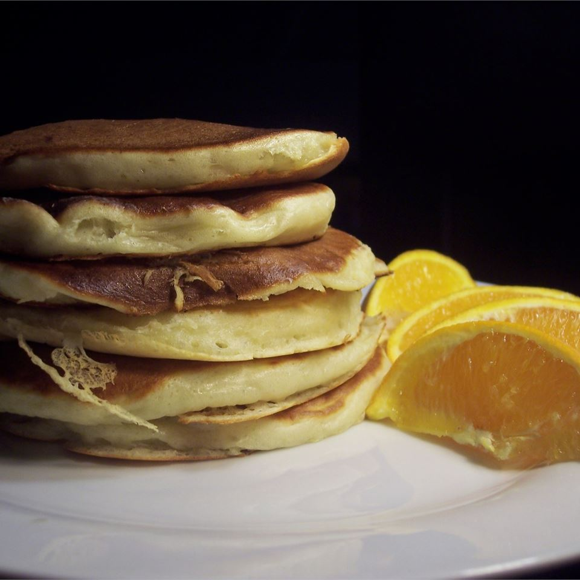

Pancakes

Description
Classic golden brown, fluffy pancakes!
Ingredients
- 11/4 cups all-purpose flour
- 1 egg
- 11/4 cups buttermilk
- 1/4 cup white sugar
- 1 teaspoon baking powder
- 1/4 cup vegetable oil
Steps
-
Preheat a skillet over medium heat. Combine all
ingredients in a blender. Puree until smooth.
-
Pour batter onto the griddle, to form 5 pancakes.
Flip pancakes when edges appear to harden. Cook pancakes
on other side for same amount of time until golden brown.